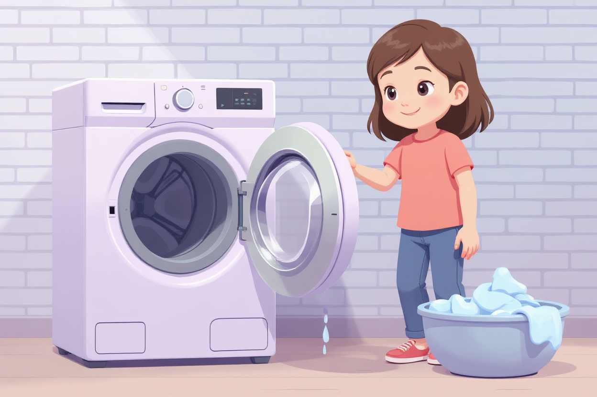
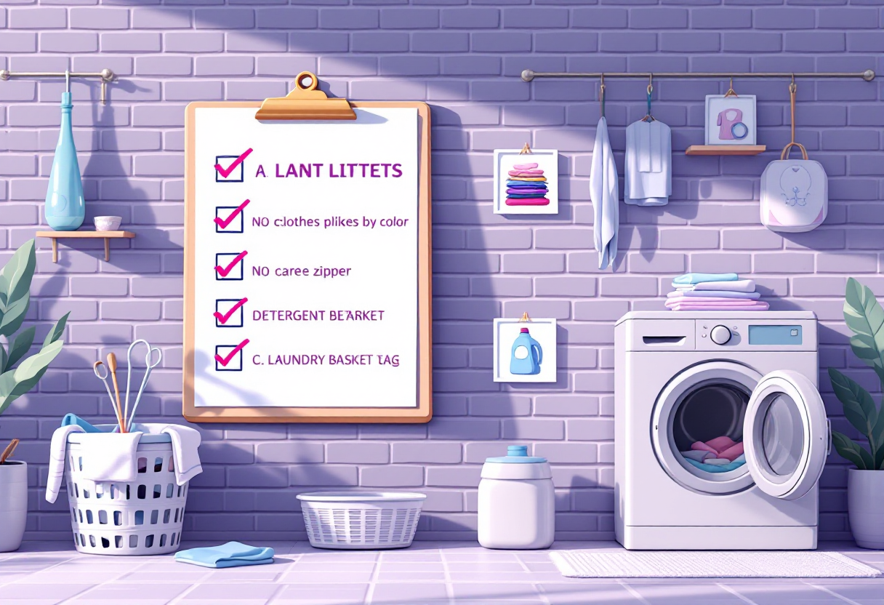

Прання без помилок
Як прати речі так, щоб вони довше служили

Сортування речей
Що варто розділяти перед пранням
Перед запуском пральної машини відсортуй речі за кольором і типом тканини.
За кольором:
- Білі речі – окремо.
- Світлі та пастельні кольори – окремо.
- Темні та чорні речі – окремо.
- Новий яскравий одяг перші кілька разів краще прати окремо.
За типом тканини:
- Делікатні тканини (шовк, віскоза, мереживо) – на спеціальних режимах.
- Джинси та щільна бавовна – окремо від тонких тканин.
- Спортивний одяг – окремо від рушників та постільної білизни.
Перед пранням завжди перевіряй кишені та застібай блискавки.

Температура прання
Який режим обрати
Завжди орієнтуйся на інформацію на ярлику одягу.
- 30°C – більшість повсякденного одягу та кольорових речей.
- 40°C – бавовна, футболки, сорочки та спортивний одяг.
- 60°C – рушники, постільна білизна та речі, які потребують глибшого очищення.
- 90°C – лише для окремих білих тканин, якщо це дозволяє виробник.
Вища температура не завжди означає чистіший одяг, але може призвести до вицвітання або усадки тканини.

Засоби для прання
Що потрібно мати
Для більшості ситуацій достатньо двох засобів:
- Гель або порошок для повсякденного прання.
- Засіб для делікатних тканин (за потреби).
Корисно пам'ятати:
- Не перевищуй рекомендоване дозування.
- Надлишок засобу може залишати сліди на одязі та накопичуватися в машині.
- Кондиціонер пом'якшує тканину, але не є обов'язковим.

Після прання
Як правильно сушити речі
Своєчасна сушка допомагає уникнути неприємного запаху та деформації одягу.
- Виймай речі з машини одразу після завершення циклу.
- Струшуй одяг перед сушінням – так буде менше складок.
- Делікатні тканини суши відповідно до рекомендацій виробника.
- Не суши речі на батареї, якщо це може пошкодити тканину.
- Перед прасуванням перевіряй рекомендовану температуру на ярлику.

Догляд за пральною машиною
Щоб машина працювала довше:
- Регулярно очищуй фільтр.
- Залишай дверцята відчиненими після прання для провітрювання.
- Раз на кілька місяців запускай цикл очищення барабана.
- Перевіряй відсік для порошку та очищуй його від нальоту.

Короткий чеклист
- ✓ Відсортувати речі за кольором і тканиною
- ✓ Перевірити кишені та застібки
- ✓ Обрати температуру за ярликом
- ✓ Не перевантажувати барабан
- ✓ Використовувати рекомендовану кількість засобу
- ✓ Одразу розвісити речі після прання
- ✓ Регулярно очищувати пральну машину